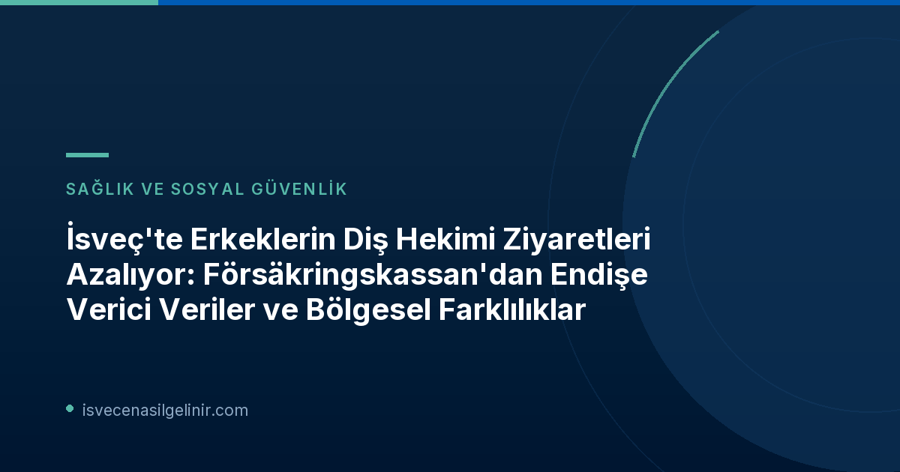

İsveç'te Diş Hekimi Ziyaretleri Genel Durumu ve Cinsiyetlere Göre Farklılıklar
Försäkringskassan'ın en yeni istatistiklerine göre, Temmuz 2024 ile Haziran 2026 arasındaki dönemde İsveç nüfusunun yaklaşık %67'si diş hekimini ziyaret etti. Bu oran, pandemi öncesi dönem olan Temmuz 2018 - Temmuz 2020 arasındaki %68'lik kullanım oranına kıyasla hafif bir düşüşü işaret ediyor.
Erkeklerin Diş Hekimi Ziyaretleri Neden Azalıyor?
Veriler, diş hekimi ziyaretlerinde cinsiyetler arasında dikkat çekici bir uçurum olduğunu gösteriyor. Kadınlar diş sağlıklarına daha fazla öncelik verirken, erkeklerin bu konuda daha isteksiz davrandığı ve genellikle acil durumlar ortaya çıktığında diş hekimine başvurduğu belirtiliyor. Försäkringskassan analisti Jonas Erlandsson, kadınların genel olarak diş sağlıklarını daha iyi önceliklendirdiğini, erkeklerin ise ancak akut bir durum olduğunda gittiğini belirtiyor. Ancak, erkeklerin diş hekimi ziyaretlerinin pandemi öncesi seviyelere neden ulaşmadığına dair net bir açıklama bulunmuyor.
| Dönem | Genel Ziyaret Oranı | Erkeklerin Ziyaret Oranı | Kadınların Ziyaret Oranı |
|---|---|---|---|
| Pandemi Öncesi (Temmuz 2018 - Temmuz 2020) | %68 | %64 | %72 |
| Pandemi Dönemi | Açıklanmamış | %62.3 | %70 |
| Son Dönem (Temmuz 2024 - Haziran 2026) | %67 | %62.1 | %71 |
Bölgesel Farklılıklar: İsveç'te Diş Hekimine En Çok ve En Az Giden Bölgeler
Diş hekimi ziyaretleri konusunda İsveç genelinde büyük bölgesel farklılıklar gözlemleniyor. Bu farklılıklar, ülkenin sağlık hizmetlerine erişimdeki eşitsizliklerini de gözler önüne seriyor.
Jönköping Zirvede, Gotland Son Sırada
Son yardım döneminde Jönköping ili, nüfusunun %72'sinin diş hekimini ziyaret etmesiyle en yüksek kullanım oranına sahip oldu. Buna karşılık, Gotland'da bu oran sadece %58 ile ülkedeki en düşük seviyede kaldı. Gotland aynı zamanda pandemi döneminden bu yana diş hekimi ziyaretlerinde en büyük düşüşü (-13.8 yüzde puanı) yaşayan bölge oldu.
Ziyaretlerin Arttığı ve Azaldığı Diğer Bölgeler
Skåne, Värmland, Östergötland ve Stockholm illerinde ise pandemi sonrası diş hekimi ziyaretlerinde artış kaydedildi. Özellikle Stockholm'de bu artış %1.1 yüzde puanı ile en yüksek seviyeye ulaştı. Försäkringskassan analisti Jonas Erlandsson, bölgesel farklılıkların diş hekimi bulunabilirliği ve ülke genelindeki diş hekimi eksikliği ile ilgili olabileceğini belirtiyor.
İsveç Genel Diş Sağlığı Yardımı (Allmänna Tandvårdsbidraget) Nedir?
İsveç'te yaşayanların ağız ve diş sağlığını desteklemek amacıyla sunulan "Allmänna Tandvårdsbidraget" (Genel Diş Sağlığı Yardımı), belirli yaş gruplarına yönelik finansal destek sağlıyor. Bu yardım, diş hekimi masraflarının karşılanmasına yardımcı olarak vatandaşların düzenli diş kontrolleri yaptırmasını teşvik ediyor.
Allmänna Tandvårdsbidraget Detayları
- Yaş Gruplarına Göre Destek Miktarı:
- 30-64 yaş arası kişiler için: Yıllık 300 İsveç Kronu (SEK)
- 24-29 yaş arası ve 67 yaş üzeri kişiler için: Yıllık 600 İsveç Kronu (SEK)
- Birikim İmkanı: Yardımın iki yıl boyunca biriktirilmesi mümkündür.
- Kullanım Şekli: Diş hekimi faturasından otomatik olarak düşülür.
- Yenilenme Tarihi: Her yıl 1 Temmuz tarihinde yardım miktarı yeniden yüklenir.
- Maksimum Birikim: En fazla iki yıllık yardım miktarı biriktirilebilir.
Bu yardım, İsveç'teki ağız ve diş sağlığı hizmetlerine erişimi kolaylaştırmak ve mali yükü hafifletmek amacıyla önemli bir rol oynamaktadır. İsveç'te yaşarken karşılaşabileceğiniz diğer bürokratik süreçler ve vatandaşlık testi hakkında detaylı bilgi için İsveç Vatandaşlık Testi sayfamızı ziyaret edebilirsiniz.
Sonuç: Diş Sağlığı Farkındalığı ve Erişimin Önemi
Försäkringskassan'ın güncel verileri, İsveç'te ağız ve diş sağlığı konusunda hâlâ önemli iyileştirme alanları olduğunu gösteriyor. Özellikle erkekler arasındaki düşük diş hekimi ziyaret oranları ve bölgesel eşitsizlikler, farkındalık kampanyalarının ve erişilebilir sağlık hizmetlerinin önemini bir kez daha vurgulamaktadır. 'Allmänna Tandvårdsbidraget' gibi destekler, bu süreçte önemli bir rol oynamaya devam edecektir. Sağlıklı bir yaşam için düzenli diş hekimi kontrollerinin aksatılmaması büyük önem taşımaktadır.
Referanslar:
İsveç'te Yaşamaya mı Hazırlanıyorsunuz?
İsveç vatandaşlık sürecinizi başarıyla tamamlamak için İsveç Vatandaşlık Sınavı hakkında bilmeniz gereken her şeyi öğrenin!